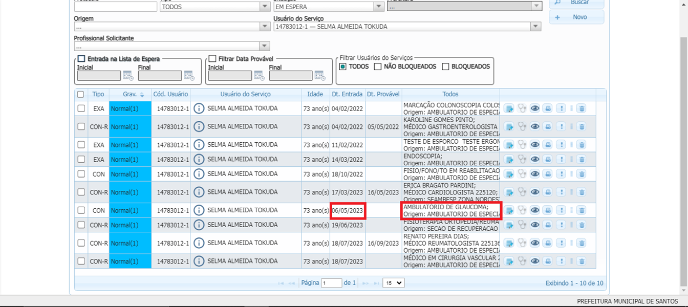
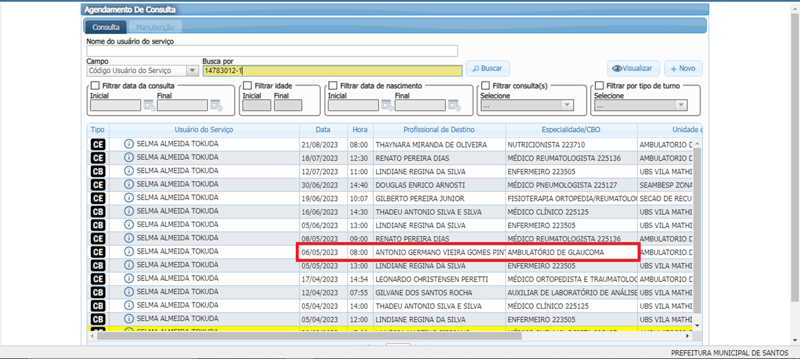
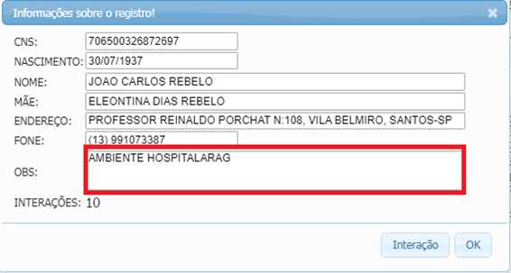

Ambulatórios Agendáveis:
Passo 1:

⚀ Verificar Dt. Entrada e Todos (Origem).
Passo 2:

⚀ Verificar se o mesmo seria Primeira Consulta ou Retorno.
Passo 3:

⚀ Verificar a Interação(I) se consta Ambiente Hospitalar.
Informações e Especialidades:
Ambulatório Oftalmológicos:
| Especialidades |
|---|
| Ambulatório de Plástica Ocular |
| Ambulatório de Retina |
| Ambulatório de Catarata |
| Ambulatório de Estrabismo |
| Ambulatório de Glaucoma |
⚀ Instituto visão do Bem ⇛ Agendamento em caso de Primeira Consulta.
⚀ Ambesp Nelson Teixeira ⇛ Agendamento em caso de Primeira consulta/Retorno.
⚀ Santa Casa ⇛ Agendamento em caso de Ambiente Hospitalar.
Demais Ambulatórios:
| Especialidades |
|---|
| Ambulatório Doenças Inflamatórias Intestinais |
| Ambulatório de Endometriose |
| Ambulatório de Esclerose Multipla |
| Ambulatório de Psoriase |
⚀ Ambulatório Doenças Inflamatórias Intestinais ⇛ Seambesp Zona Noroeste
⚀ Ambulatório de Endometriose ⇛ Seção Instituto da Mulher e Gestante.
⚀ Ambulatório de Esclerose Multipla ⇛ Seambesp Zona Noroeste/Ambesp Nelson Teixeira.
⚀ Ambulatório de Psoriase ⇛ Seambesp Zona Noroeste